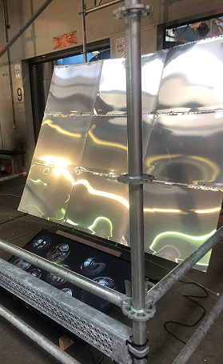
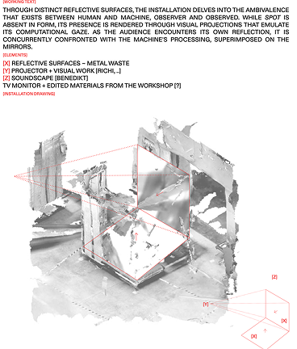
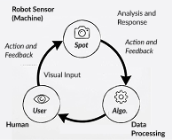
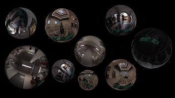
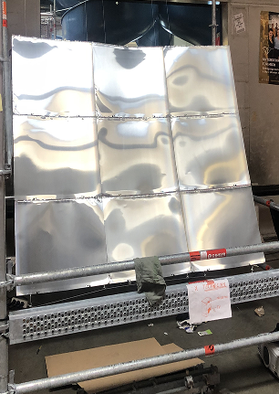
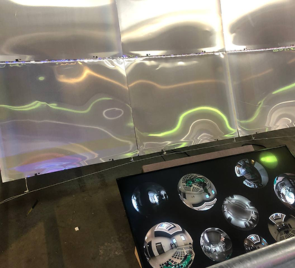
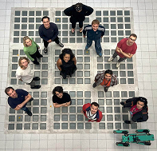

OF(F) THE GAZE stages machine perception as an immediate spatial encounter. A Boston Dynamics Spot robot navigates a grid of reflective tiles, placing the machine and the audience within a shared field of observation as the mirrored floor draws visitors' reflections into the work. The installation asks how people experience being seen, tracked, or mapped by technical systems whose operations remain opaque. Bringing robotic movement and human presence into the same physical environment shifts attention away from the robot as an isolated spectacle, focusing instead on the spatial relationships through which machine perception takes place.
The system diagram for OF(F) THE GAZE traces a continuous loop among robotic sensing, data processing, and human presence. The physical installation brings that pipeline into the room, where robotic movement, reflective surfaces, and audience responses form a shared encounter. Moving from abstract diagram to physical space directs attention to the relationship between technical architectures and the people who navigate them. This shifts the focus from abstract computation to the spatial and social conditions in which machine sensing becomes meaningful.





